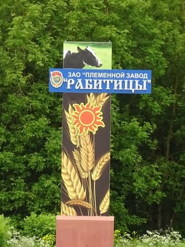

Какой населенный пункт района не возьми - впервые упомянут в Писцовой книге Водской пятины 1500 года.
Это была типовая деревня без особенностей.
На Шведской карте 1676 года - деревня Ropetitsa.
По карте Санкт-Петербургской губернии 1860 года - деревня по Рождественскому тракту при колодце. То есть, ничего примечательного.
Рождественский тракт это историческая дорога, которая связывала (и связывает) город Ямбург (Кингисепп) на Таллинском шоссе и село Рождествено на Киевском.
В 90-ых деревня ожидаемо умирала, но неожиданно население выросло от 19 человек в 1990-ом до 1302-х в 1997-ом.
От чего произошли такие метаморфозы не знаю, но по времени совпало: - в конце 1998-го было создано ЗАО «Племенной Завод «Рабитицы»».
Однажды, в компании, я пренебрежительно отозвался о современном сельском хозяйстве. На что Лукк Валерий Юганесович заметил:
- Ты напрасно ухмыляешься. Современное животноводство высокорентабельно и не уступает лучшим мировым показателям.
Времена, когда было принято скалить зубы над деревенскими недотепами прошли.
Дальше последовал его рассказ о производстве молока и мяса. Тема меня удивила и отложилась.
Пришло время и для себя картину происходящего нарисовал.
Существует три способа содержания:
- Пастбищный.
Традиционный, при котором скот проводит зиму в теплом стойле, лето на пастбище.
- Привязной.
Новаторский способ при котором животные проводят жизнь в стойле, практически без движения.
- Беспривязный.
Скот проводит жизнь перемещаясь в коровнике или загоне. Процессы доения, кормления, поения, уборки навоза - автоматизированы.
В Рабитицах работают по третьему методу.
Производство управляется компьютерами с применением облачных технологий (как и зачем "облачных" - не знаю).
Скот только голштинской породы класса "элита" и "рекорд-элита".
Нет коров других пород, сравнимых с голштинами по надоям.
Кормом служит сенаж в рулонах сформированных на базе зерновых молочно-восковой спелости в комплексе с силосом и витаминными добавками.
Идеально чистая вода в поилках.
Надо отметить, порода весьма нежная и требует тщательного ухода.
Кроме того, особеность голштинов - преобладающий процент рождения бычков над телками.
Для решения проблемы используют сепарацию семени по женской хромосоме "Х" и мужской "Y" методом сексирования. (Процесс удивительный. Для людей неприменим).
Процедура отбора семени у быков тоже познавательная.
Продолжительность жизни коров 4.5 - 6 лет. Определяется периодом лактации.
При пастбищном методе в частных хозяйствах срок жизни коровы - 7 - 10 лет. (При хорошем уходе - 12 - 15 лет).
Технология забоя голштинского скота гуманна, насколько возможно, строго регламентирована санитарными и ветеринарными нормами.
Таким образом, в Рабитицах современное роботизированое предприятие по производству мясомолочной продукции, в окрестностях которого не увидишь ни одной коровы.
А на огромных площадях разрушаются многочисленные здания бывших животноводческих ферм. И тоже нет коров.
За нелепости прошу простить, неспециалист.